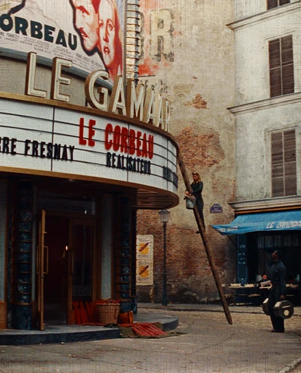
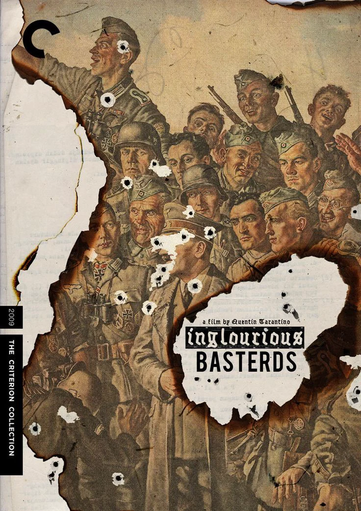

War, Drama, Adventure
2009
153 minutes
Quentin Tarantino
In Nazi-occupied France during World War II, a group of Jewish-American soldiers known as the Basterds carries out a ruthless campaign against the Third Reich. At the same time, a young cinema owner plots her own revenge against the Nazi leadership, setting the stage for an explosive confrontation that could change history forever.